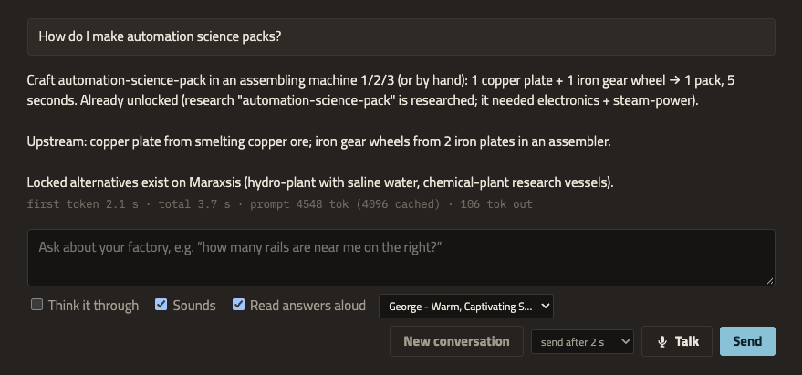
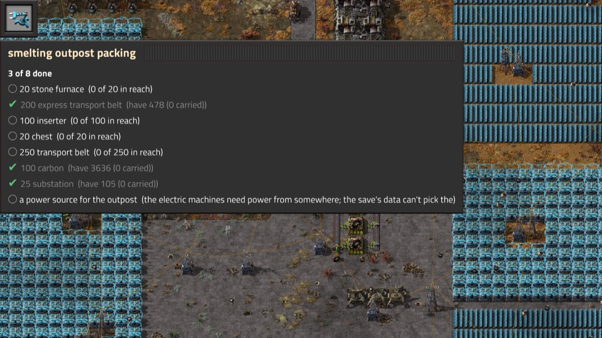
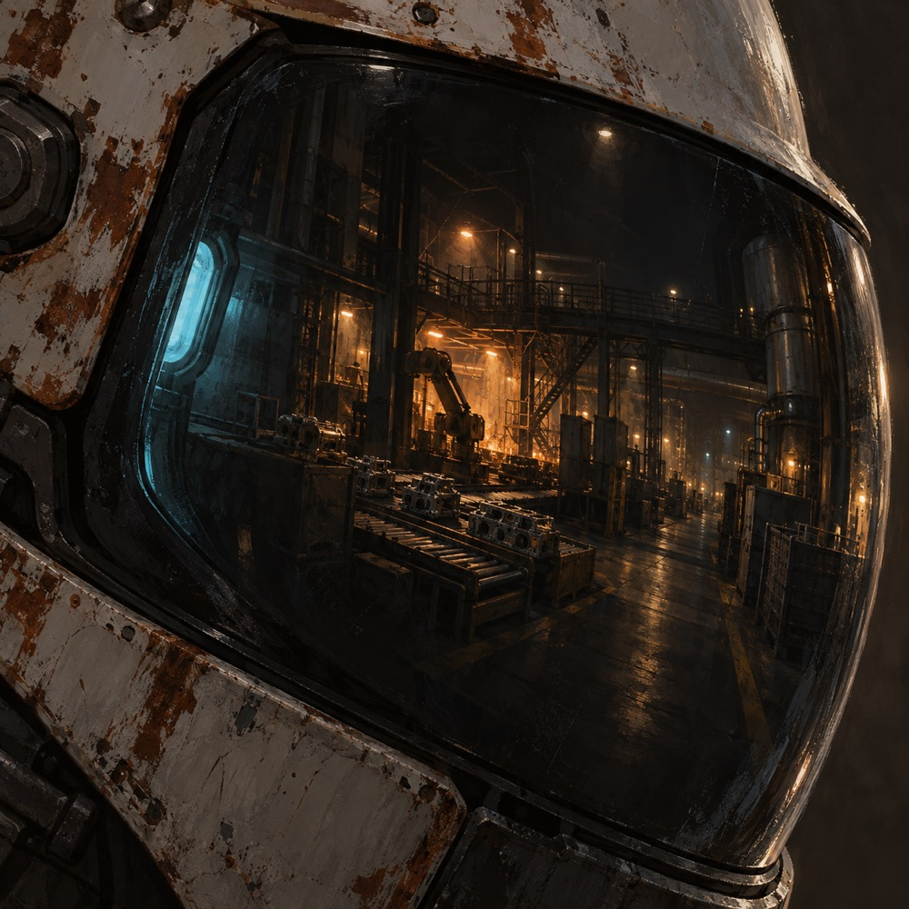

Ask about your factory in plain words. Second Shift answers from your own game, draws its charts from the real production statistics, and only does what you could do yourself.
Runs on your Mac with a local model. Online voices are opt-in.
“How much jelly is Gleba making? Chart it.” First words in 2.7 s, chart from the game's production history.
What it does on shift
It reads your factory, so you don't have to.
Plans from your recipes, not the wiki
Recipes, machine speeds and research are read from the game you're playing, mods and all, so modded recipes are right. The numbers are worked out in code, and the model explains them.
Asked
60 advanced circuits / min
Answer
4.8× assembling machine 3
From
coal, crude oil, copper ore and iron ore, with every step in between
Blueprints on request, built by your robots
Ask for a rate and it lays out the machines, inserters, belts and poles for your research. Say “paste it here” and you get a card first. Nothing changes until you confirm, and your construction robots do the building.
1Ask: “a blueprint for 300 electronic circuits a minute, paste it here”
2Confirm the card: 22 ghosts at the map view
3Robots build it; Ctrl+Z takes it back
In the consoleIn the game, 2× speed
Show it a build
Click Show the companion a build on your shortcut bar and drag over part of the factory. It counts what's there, checks whether belts and inserters keep up, and says what looks wrong.
Talk to it, hands-free
Click Talk or press Alt+V, even from inside the game, and ask out loud. It stays on like a radio channel until you click Talk again.
1Ask: “where’s the nearest coal?”
2Pause for 2 seconds and it sends (pick 1–5 s)
3The answer is read aloud as it arrives, then the mic opens again
Answers are read with your Mac’s voice or an ElevenLabs voice if you add a key, and short sounds mark alerts, research and cards. Voice input uses Chrome’s speech recognition, on your Mac after a one-time download.

Voice needs Chrome. Online voice services are opt-in: see the README for what stays on your Mac.
Never arrive without the belts
Say what you’re about to build, in your own words: “a new smelting outpost — about 20 ovens, a couple hundred belt, enough arms to feed them and chests for storage.”
1It writes the list with counts, and says the assumptions
2Your game’s own data adds the rest: fuel for a burner oven, poles for an electric one
3Items tick themselves off as you pick them up
4“Am I ready?” — what’s missing, and whether the load fits your slots
Press Alt+L for the same list on a panel in the game. It’s read-only on purpose: you show and hide it, and you change the list by asking. In range of your bots, “can the bots bring the rest?” puts the shortfall in a request section of its own — your own requests are never touched.

Alt+L in the game. The list is kept per world, so it survives a reload — and it isn’t only for packing: repairs, or what to check after a brownout.
“What is this?”
Hover something and ask. It answers from your game: what the thing is, how much it holds, which logistic job a chest does, how fast a belt runs, how far a pole reaches. Ask what’s inside and it reads the contents — chest, wagon, tank or a machine’s input.
If your mouse has moved on by the time you finish the sentence, it uses what you last hovered and says how long ago. And it sticks to what your game’s data says, telling you when the rest is base-game behaviour a mod could change.
Finds things
“How many express belts are near me?” It counts them and highlights them in-game.
Finds your stuff
“Where are my 200 steel?” It adds up what you carry and the chests you can see, and says which is nearest.
Measures, not guesses
“What rate is this really hitting?” reads the machines’ own craft counts and reports the real number.
Sends your spidertron
“Walk my spidertron over to me.” Confirm the card; Alt+X or “stop” takes it back at once.
Takes screenshots
“Take a screenshot of this spot.” The picture shows up in the console.
Watches for trouble
Attacks, destroyed buildings and finished research arrive the moment they happen.

The helmet rule
If you can do it, it can. If you can't, it can't.
It uses your tools, your reach and your map coverage, at the same cost in time and items. The mod checks every action when it runs. The companion never gets raw Lua or console commands.
runs now
Looking, counting, reviewing, screenshots, and small jobs you asked for.
asks first
Map changes: ghosts, deconstruction and upgrade marks, recipe changes. Anything it suggests on its own.
never
Real buildings from nothing, deleting, teleporting, spawning items, finishing research, seeing through fog of war.
How it works
Everything runs on your machine.
GameFactorio 2.0+ Second Shift mod
RCON · named actions
ServerBunagent · planner · blueprints
OpenAI-style API
ModelLocal modeloMLX for now
WebSocket
ConsoleYour browsersecond monitor
< 0.1 ms
added per game tick on a large Space Age base (0.05 ms of script time in the latest profile). No map scans on a timer, only a one-time scan when a save first loads.
~1.5 s
to the first words of an answer, with the model's prompt cache kept warm and the model kept awake while you talk.
0
calls to the cloud needed. The game, the mod, the server and the model all run locally; voice can use online services if you turn them on.
Get started
Five steps from clone to first question.
You'll need
macOS on Apple Silicon. Windows and Linux aren't supported yet.
Factorio 2.0 from Steam. Tested with Space Age and extra mods.
Bun 1.3 or newer.
Chrome to talk to it (the console itself works in any modern browser).
oMLX serving a model with tool calling. Tested with Qwen3.8 Flash-Next, which needs about 70 GB of memory. Other providers are planned.
Host the game. The companion connects to multiplayer-hosted games only: start a new one from Multiplayer → Host new game, or host a save with the launcher. Back up existing saves first; hosted games autosave.
# 1. get the code
git clone https://github.com/WilyToad/second-shift.git
cd second-shift && bun install
# 2. with Factorio closed
bun run setup-rcon
bun run link-mod
# 3. start oMLX with your model# 4. host a game: Multiplayer → Host new game,# or an existing save:
bun run launch -- "path/to/your-save.zip"
# 5. open http://127.0.0.1:5170
bun run start
The README has every detail, troubleshooting and the development guide.